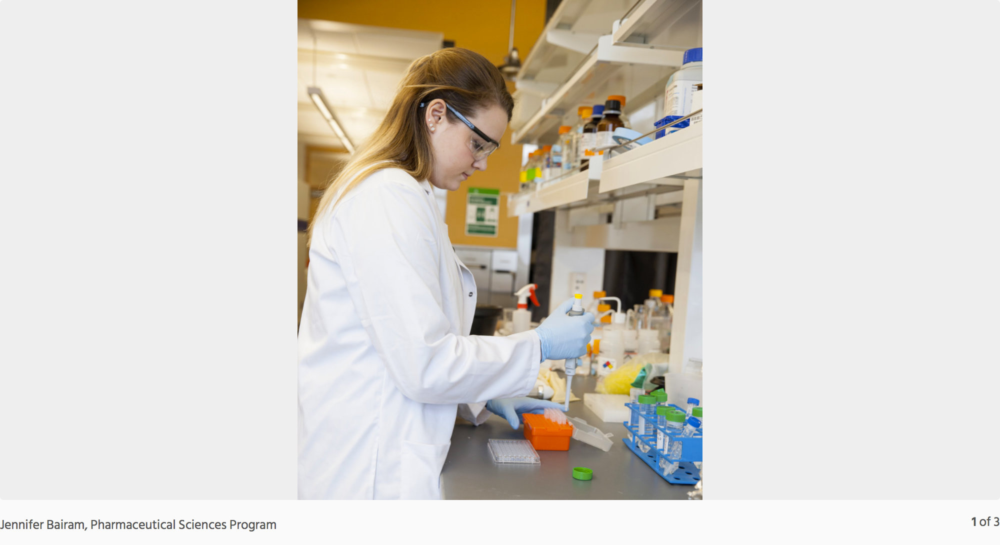
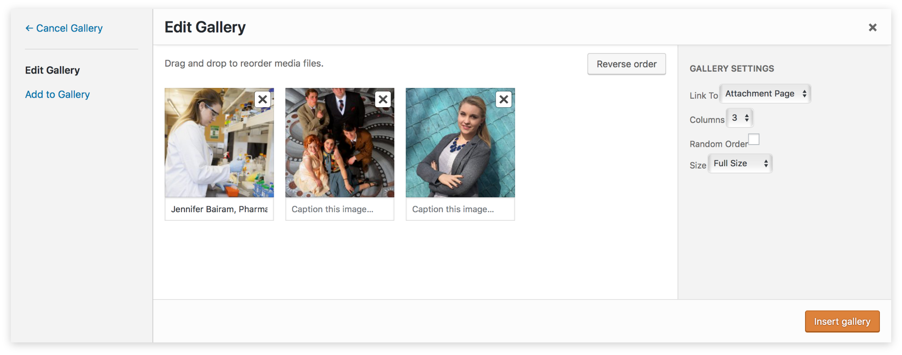
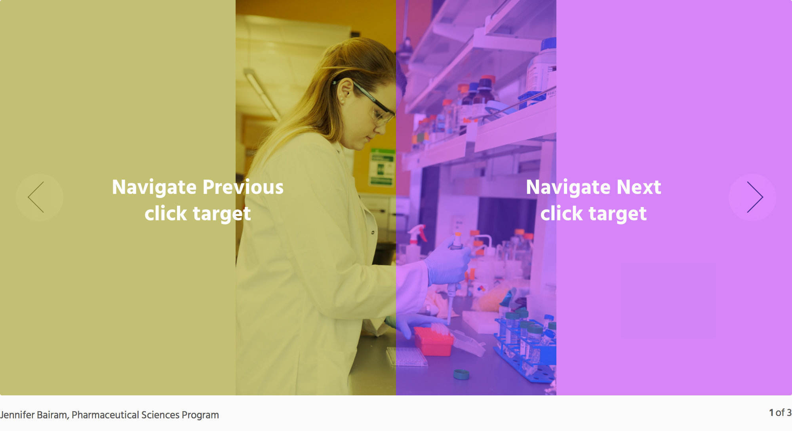

The HTML rendered from this shortcode is parsed by the Slideshows component and the images and captions are used to build a slideshow, which replaces the default WordPress gallery.
Slideshows
Slideshows transform native WordPress image galleries into a user-controllable carousel with a clean UI.
Usage
Slideshows are implemented by creating a WordPress image gallery and selecting full-size images in the gallery settings.
Wordpress will create a shortcode from the gallery configuration.
[gallery size="full" ids="24,18,39"]
Attributes
size (string) (required)
The size of the images
(omitting or setting a value other than 'full' will default to the native WordPress gallery)
ids (string) (required)
A comma-separated list of image ids
Navigation arrows appear when hovering over the slideshow. However, the click targets for navigation are each 50% of the total slideshow area.
